Help / FAQ
General Information
So, it’s a magic one click rigging solution?
It’s not! It includes many tools to automate and speed up the rig, but the rigging artist’s hand is still required to adjust the bones positions, vertex weights…
Can I sell characters rigged with Auto-Rig Pro?
Of course! Just include the “rig_tools” and “proxy_picker” addons in the download package, to include the IK-FK snap, picker and other features to animate the character.
What can I rig with it?
It’s meant to rig any stylized or realistic character, based on bipeds/multi-peds bone structure: humans, cats, dogs, centaurs, spiders, birds… Here are the available limbs:
Spine
Arm, with optional fingers
Wings with feathers, based on arms
Leg, with optional toes
Head, with neck
Ears
Tail
Chain: Spline IK
Chain: Bendy Bones
On top of that, it’s of course possible to add new bones manually for specific needs (hair, clothes, props…).
The following character presets are also included:
Human
Dog
Horse
Bird
How does the auto-detection (Smart) work, what limitations?
Was AI used to write this addon?
Occasionally: to give a rough estimate, 99% of the Auto-Rig Pro code is human code
As an assistant and teacher on specific tasks, not a substitute.
To access information faster than with traditional web browsing. For example, getting the path of the Document folder for all OS in Python, finding a specific math function… All of these can be found online, but it’s generally slower
For small optimizations here and there
All lines provided by AI are carefully reviewed and modified if necessary. They often comes with mistakes that must be corrected.
Is the Smart tool using AI? How?
Note
Are asymmetrical models supported?
Asymmetrical models are supported by both the smart feature and manual bones edition. By turning off Mirror when placing the markers and X-Mirror Axis when editing the reference bones:
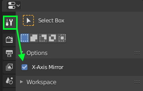
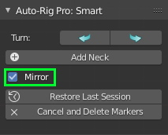
Does it include bendy bones?
They’re currently used to handle the neck twist deformation, and for the leg and arms secondary deformers in option, since they’re not exportable to game engines. To export the secondary bones to Fbx, it’s best to stick to the “Twist” mode.
Is it possible to add new, custom bones?
Sure, new bones can be added after generating the final rig (Match to Rig). No reference bones can be created for the custom bones, they will remain in the final rig. However new bones are not exported by default, to export them see Custom Bones
Is it possible to delete bones?
Purchase and Download
Where to download files and latest updates?
Purchased on Superhive
An email from Superhive should have been sent to you containing the links to download the files.
Or log in your Superhive account and go to the Orders page: https://superhivemarket.com/account/orders
If you don’t have an account yet, create one with the same email address used when purchasing, this should retrieve the previous orders automatically. For further support related to file download and account, please contact the Superhive support: support@blendermarket.com
Purchased on Gumroad
Go to Gumroad https://gumroad.com/ and log in.
Go to your Library page, click on the name of the product Auto-Rig Pro, and download files: https://app.gumroad.com/library
Important
If an older version is already installed, make sure to uninstall the older version before installing the new one. Otherwise, the python cache won’t update, resulting in random errors.
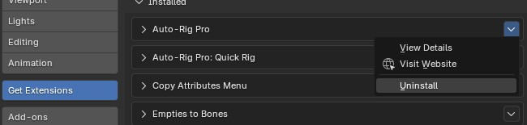
I purchased on Superhive. I don’t receive update notifications, why?
Make sure you consented to receive emails from creators in your Superhive account preferences: https://superhivemarket.com/account/privacy-center/consents
Issues
Installation, System
The addon doesn’t install
Install the auto_rig_pro_x.xx.xx.zip file (for example auto_rig_pro_3.76.46.zip) as is from Blender, without unzipping it. See Installing the Add-Ons for more details.
Note
Undo/Ctrl-Z does not work
Make sure Global Undo is enabled in the User Preferences (Edit > Preferences…)
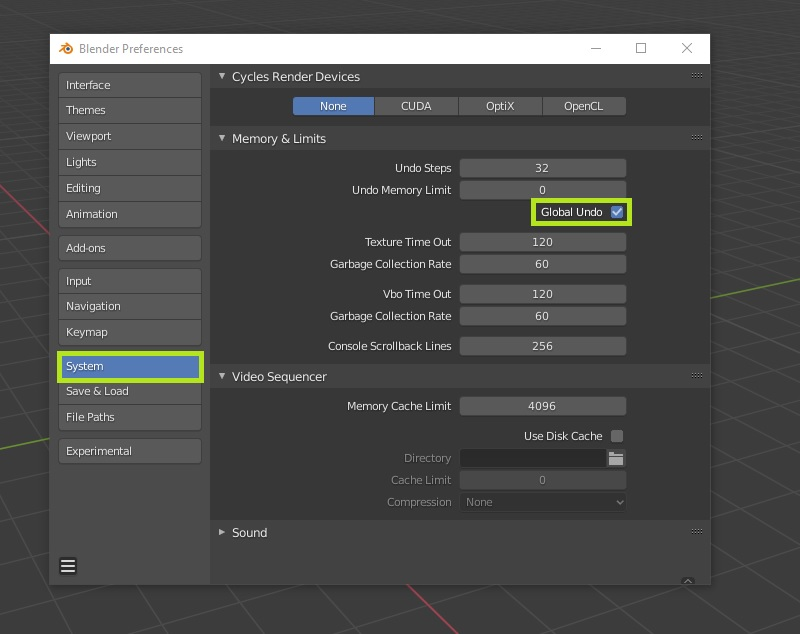
Smart
(Mac OS) The Smart tool crashes Blender or freezes

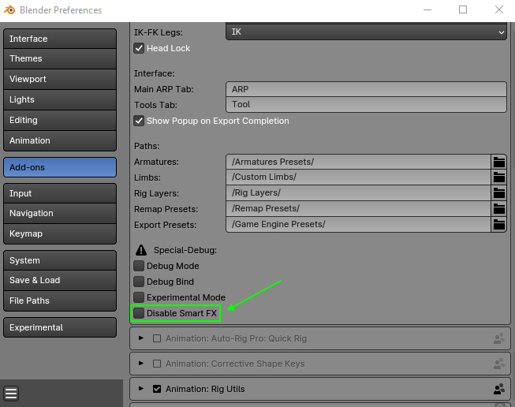
Rig
IK bones roll can’t be adjusted
The IK bones roll is calculated internally when clicking Match to Rig, based on the bones alignment. This is necessary for correct IK-FK snapping and pole calculation. The roll can be adjusted by shifting the bones positions to modify the alignment, see IK Chains.
Skin
Binding freezes
If Blender freezes when binding, it means there are either too many polygons, or the mesh is made of hundred of separate pieces (for example multiple hair meshes) while the Split Parts option is enabled. Thus, it’s very long to bind because each separate piece is split into a new object and skinned internally. To solve it:
Use the Voxelize engine instead of Heat Maps
Or use the Optimize High Res option and set the Polycount Threshold value lower than the amount of faces of the object, i.e. 50.000
Alternatively, use the Voxel Heat Diffuse Skinning addon, see Skinning
Binding doesn’t give satisfying results
Unfortunately, there are a few cases preventing binding to work due to unexpected mesh topology. This is a current limitation of the Blender automatic weight solver, that Auto-Rig Pro is using as well. Also, the automatic binding can never be perfect and requires the rig artist’s hand to improve the result. Here are solutions to fix it:
Enable Voxelize: the binding solver will evaluate voxelized instances of meshes (water-tight, closed volumes). It can lead to better results, but also inferior results sometimes depending on the meshes.
Enable Split Parts: meshes made of multiple disconnected pieces (clothes, teeth, eyes…) may skin poorly/not at all if this option is not enabled.
Enable Scale Fix: when meshes are high-poly or vertices very close to each other, the automatic binding can fail. This option tells the solver to operate internally on scaled up instances of meshes for better results. Alternatively, scale up the character and armature (S key, then type numpad 10 to scale ten time bigger), bind the mesh, then scale it down (S key, type numpad 0.1) to reset to the inital scale.
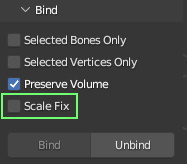
Invalid topology: The mesh topology may need some cleaning. First perform Merge by Distance to delete multiple vertices at the same location: select all vertices, W key > Merge Vertices > By Distance. Also make sure the mesh has no serious deficient topology (Select > Select All by Traits > Non Manifold to select the non-manifold vertices). If you can see a lot of vertices selected all around the mesh (excluding boundaries), the mesh topology is not good enough: there may be edges connected to more than 2 faces, and other topology issues that needs fixes.
The mesh contains custom normals: Imported files such as OBJ and FBX format may contain complex/dirty normal datas that the binding solver does not appreciate. Delete them, select all vertices, press Shift-N to recalculate correct normals data.
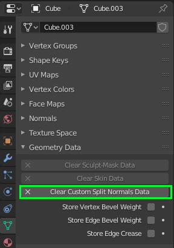
Others : If it still doesn’t work, as weird as it may sound, the mesh is likely subject to an unindentified internal Blender bug that can be strangely fixed by adding a subsurf modifier. Add the subsurf modifier (level 1 is fastest), bind the mesh then delete the modifier.
Skinning issues after binding
- The automatic binding just assigns weights based on bones-vertices distances, therefore it rarely gives perfect results.Depending on meshes topology, the quality of the results vary.Subtle areas like the face, teeth, eyelids, etc… require special attention. The jawbone may deform the teeth, the eye bones may deform the eyelids, since they’re very close to each other and similar situations should be expected elsewhere.To fix it, the next step in the rigging process is called Weight Painting: in other words, the rigger must manually assign bones weights to vertices, by painting them or by directly setting weight values to vertices.If you are not familiar with Blender’s skinning tools, you will easily find tutorial on Youtube or other places to learn from.Also, check this chapter: Skinning: Weight Painting and Shape Keys for more resources and tutorials.
When using very high poly meshes (~80.000 faces) the Blender automatic weight solver may become slightly buggy on the edges… A simple way to fix this is switching to Weight Paint mode, and add a little negative level offset to the weight groups. And if more accuracy is needed, just paint over the automatic weights.
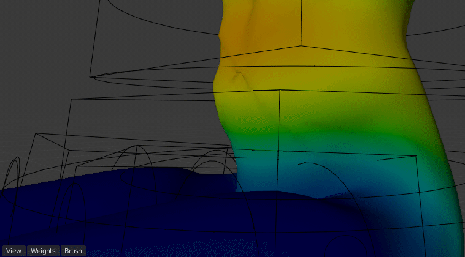
Animation
Messed up keyframing/ incorrect transforms
If keyframing controllers messes up the controllers position (controllers transforms (position, rotation) going crazy), make sure to disable Visual Keying in the Blender animation preferences. This option should never be enabled when dealing with bones that have Child Of constraints such as the feet, hands, it doesn’t work with it:
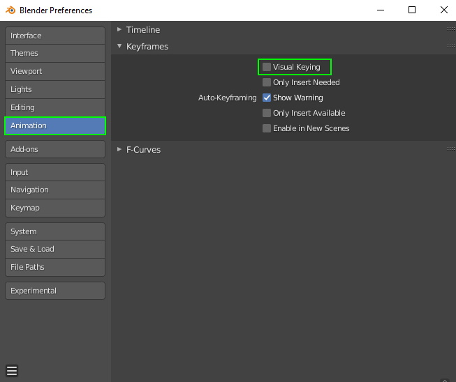
Remap
The feet stay in place
By default, building the bones list will try to match the source feet bones to the target FK feet bones. However, the feet are by default in IK mode. Just switch them to FK if you use the FK remapping, or IK if you use the IK remapping, see: Arms and Legs
Smart
The markers are invisible?
Make sure the scene units are set to 1.0 scale. You’ll be able to change it later (e.g. Unreal export) but the smart feature only works with 1.0 scale units.
Game Engine Export
Exporting animations do not work at all
See the Animations Export doc.
Exporting many actions is slow
Blend Shapes Normals
If some surfaces deformed by blend shapes (shape keys) look bumpy, folded, while the vertices position are actually correct, the following settings should be applied in Unity. Below is a before and after comparison:
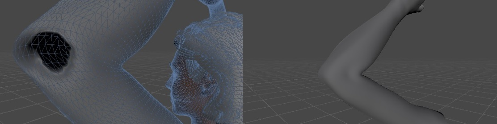
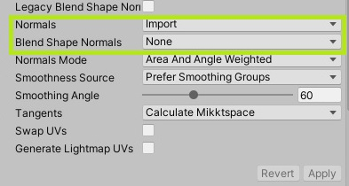
In Unreal:
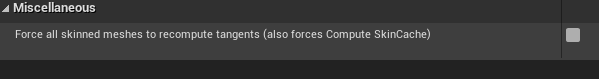
Deformation Issues
Game engines like to automatically clamp the maximum amount of deforming bones for better performances. This may lead to deformation issues if this value doesn’t match the number of deforming bones in the Blender rig/skin. See: Skin Weights
Overlapping Polygons
Animations may be simplified/compressed in game engines for performance reasons, which may lead to slight inaccuracies. This is generally not noticeable, but it may be visible when some polygons are very close to each other, resulting in overlapping faces. To fix it in Unity, disable compression:
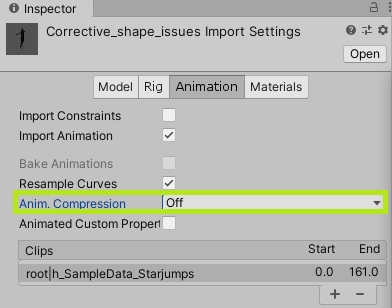
Set the “Simplify Factor” animation export setting to 0.0 to ensure high-fidelity animation export

Also, game engines are subject to take shortcuts to deform vertices with simpler maths for skinning and blend shape evaluation, for better performances, at the cost of accuracy. This is why the Fbx animations may be slightly different when imported in Blender/Maya/3dsMax compared to Unity/Unreal, leading to overlapping polygons. If the above solution did not work, increase the distance between polygons.
Twist Bones
Not exporting twist bones will lead to differences, since the vertices of twist bones (arm_twist, c_forearm_twist_offset…) will be weighted to the main bones at export time (arm_stretch, forearm_stretch..). Then their deformations will slightly change since twist bones may have different rotation. To fix it:
Export twist bones (it’s possible to use them with the humanoid rig in Unity by using additional scripts)
Or transfer the twist weights to the main weights and delete the twist vertex groups (“c_arm_twist_offset”, “forearm_twist”…). Use the Vertex Weight Mix modifier to handle the transfer with these settings and click Apply:
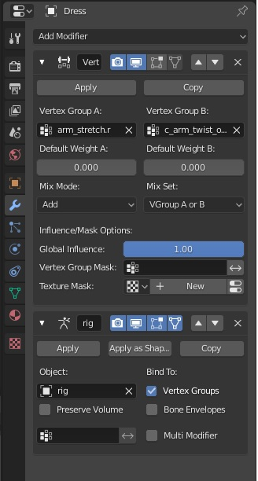
Incorrect Bones Rotation
Set the “Simplify Factor” animation export setting to 0.0 to ensure high-fidelity animation export
Make sure to press the Fix Rig button before exporting, see Check-Fix Rig
Make sure bones parent of the bone that has rotation issues have scale values equal to 1.0. In example, if the hand has rotation issues, make sure the forearm, arm, shoulders and spine bones have scale values to 1.0 to fix it.
Some bones may rotate randomly, with a jitter/shaky motion in certain cases. This is due to an unpredictable bug in the transform matrix evaluation when a bone has the same rotation as its parent bone (or +180°), for example lips bone parented to head bone. To fix it, enable Fix Rotation in the export option, see Misc. If it still doesn’t fix, use this quick workaround: click Edit Reference Bones, rotate very slightly the bones so that they’re not 100% lined up, and click Match to Rig
Retargetting animation in Unreal Engine may lead to rotation issues. Setting the retargetting translation mode to Skeleton fixes it, see Retargeting Translation Type
Fingers Rotation in Unreal
When importing the rig in Unreal as the Unreal Mannequin rig, it will perfectly match current animations only if the bones rotation are fully identical to the Mannequin rig. If you need perfect match, it’s necessary to correct the finger rotation so that it matches exactly the Mannequin fingers rotation, then Apply Pose as Rest Pose and Match to Rig. Here is the Mannequin armature blend file, you can append it in Blender for comparison.
Note that the fingers X axis is pointing up, while the Z axis is pointing up for Auto-Rig Pro fingers, this 90 rotation difference should be kept when rotating bones.
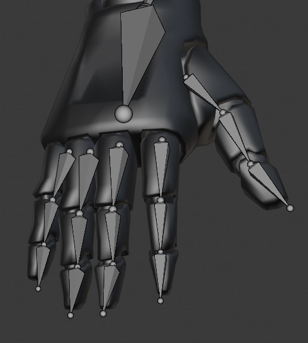
When exporting with x100 Units, the legs are broken?
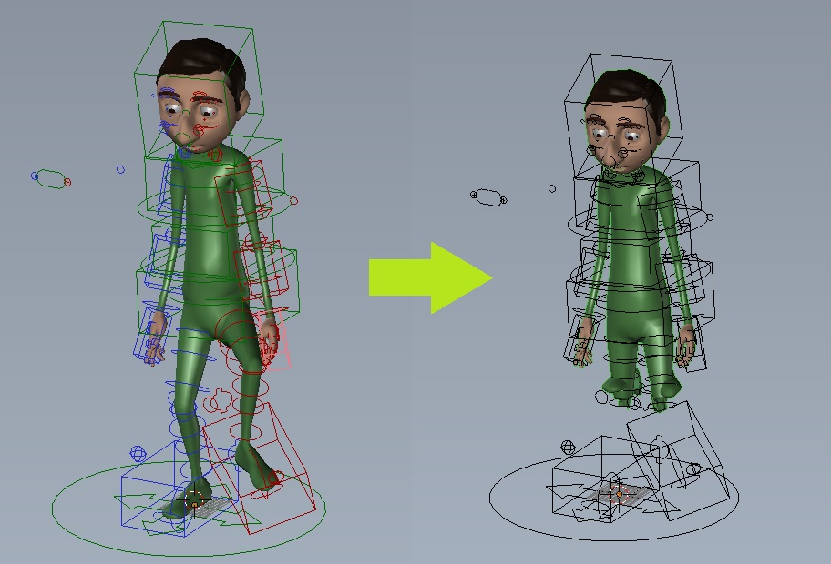
Due to the an imprecision of the IK stretch calculation, Blender does not handle well big models, whose scale are multiplied by 100 when switching to Unreal Engine units. Unfortunately, after many trials, there’s nothing I can do on my side (addon code) to prevent it. The bug has been reported and hopefully and will be fixed someday. As a workaround, before clicking UE Units just make sure to scale the armature and mesh objects together so that they’re not bigger than the standard grid floor, in Blender units.
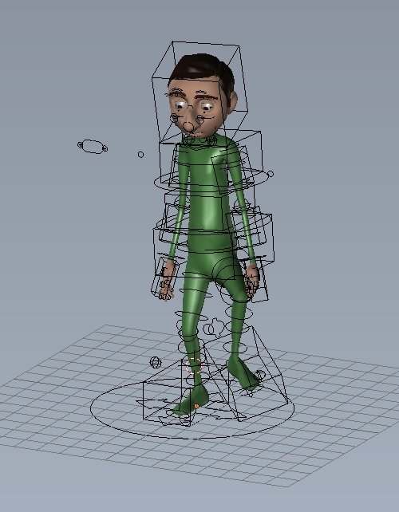
Misc
Is it possible to mirror a full animation? Flipping the right controllers keyframes to the left?
Yes! Blender supports that natively.
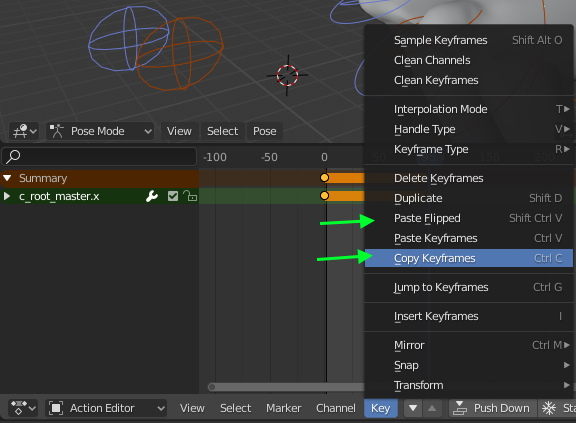